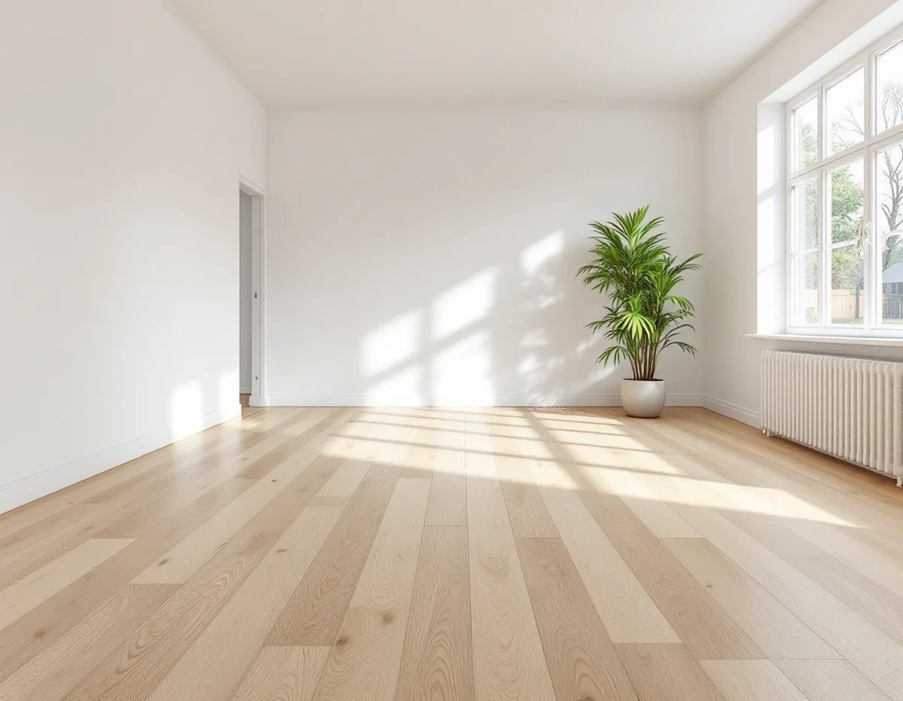
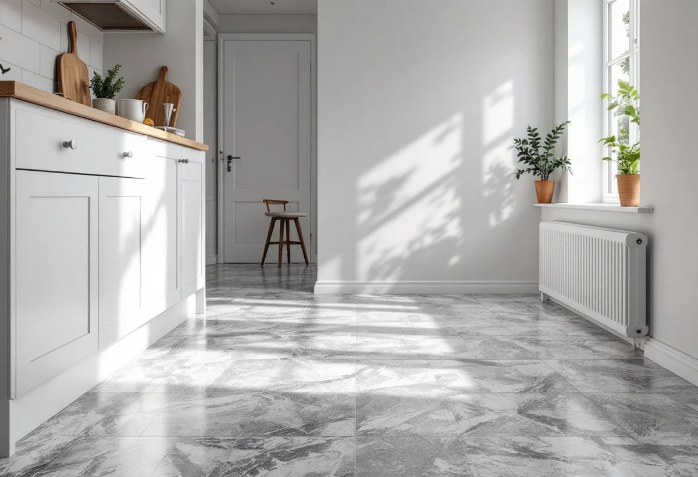

Platsbesök
Gratis besök där vi tittar på golvet och underlaget.

Många golv i Skärholmen, Bredäng, Sätra och Vårberg ligger kvar sedan husen byggdes på 1960- och 70-talen.
Beskriv jobbet kort.
Något blev fel. Kontrollera uppgifterna eller ring 08 12 410 276.
Vi tittar på jobbet på plats innan du får offert.
Du ser vad som ingår och vad det kostar.
Vi drar av ROT direkt och sköter ansökan.
Geal Entreprenad AB, Bromma. Org.nr 559303-7566.
Innan en gammal plastmatta rivs behöver man veta vad den innehåller. Geal Entreprenad AB lägger nya golv i radhus och lägenheter och undersöker de gamla först.
Stadens områdesfakta för 2025 räknar 1 976 småhus med äganderätt i Skärholmens stadsdelsområde. I flerbostadshusen finns omkring 3 500 lägenheter hos allmännyttan, 6 500 hos privata hyresvärdar och 3 300 bostadsrätter. Stadens vägledning Varsam beskriver stadsdelarna som storskaliga, byggda från 1962 och framåt.
Den som hyr kan enligt Stockholms stad normalt inte göra ändringar som påverkar husets tekniska egenskaper, och i en bostadsrätt behövs föreningens tillstånd för sådana. Ett golvbyte är oftast enklare, men i radhusen är det också där de äldsta golven brukar ligga kvar.

Arbetsmiljöverket skriver att man ska räkna med att det finns asbest i hus byggda fram till 1982. Bland exemplen nämns golvmaterial av plast, vissa golvplattor och plastmattor, och tillsatser i fix och fog. Asbest i bunden form dammar normalt inte så länge man inte rör materialet, men när en matta rivs eller slipas bort gör man just det.
Byggherren ska enligt Arbetsmiljöverket se till att materialen undersöks innan rivning och renovering, och för att riva asbesthaltigt material krävs tillstånd och särskild utbildning. Vi tar prov på mattor, plattor och lim innan vi river, och lägger hellre det nya golvet på ett säkert underlag än river i blindo.
Golvbranschen beskriver lamellparkett som en golvprodukt med två eller flera träbaserade skikt, där toppskiktet är massivt trä på minst 2,5 millimeter. Skikten limmas ihop med fiberriktningen vriden 90 grader mot varandra för att minska golvets fuktrörelser. Ek dominerar som ytskikt.
Ett flytande lamellgolv kan ofta läggas ovanpå ett befintligt golv som får ligga kvar, vilket är en fördel när den gamla mattan inte ska röras. Vi kontrollerar då att underlaget är plant och torrt och att dörrar och trösklar går att anpassa.
Linoleum tillverkas enligt Golvbranschen av linolja och andra vegetabiliska oljor med trämjöl och kalkstensmjöl, oftast på en bärare av juteväv, i tjocklekar från 2 till 4 millimeter. PVC-golv finns som homogena produkter, med samma sammansättning genom hela mattan, och heterogena med ett tunnare slitskikt överst.
I hallar och kök i radhusen väljer många en matta igen. Vi lägger linoleum eller PVC, och i våtrum en våtrumsgodkänd matta. Mer om tjänsten finns under golvläggning.
Golvbranschen skriver att lamellparkett huvudsakligen levereras lackerad från fabrik, naturoljad eller UV-oljad, och att ytskiktet kan ha stavar i olika bredd och längd och ibland fasad kant.
PVC-golv har enligt Golvbranschen ofta en ytbehandling av polyuretan som ger beständighet mot fläckar och friktionsmärken och minskar behovet av polish och vax. Vi går igenom skötseln när golvet är lagt.
Gratis besök där vi tittar på golvet och underlaget.
Gamla mattor, plattor och lim undersöks.
Lamellparkett, linoleum eller PVC.
Avjämning och fuktkontroll vid behov.
Golv, lister och trösklar.
Städning och skötselråd.
Äger du ett småhus ger golvbytet rotavdrag på arbetskostnaden när du bor i huset. Avdraget är högst 30 procent och högst 50 000 kronor per person och år, och material och resor ger inget avdrag.
I en bostadsrätt ger golvbyte inne i lägenheten rotavdrag för det du ansvarar för enligt stadgarna. Geal drar avdraget direkt på fakturan.
Golvytan, vad som ligger under, om asbest måste saneras, hur mycket avjämning som behövs och vilket golv du väljer. Efter ett gratis platsbesök får du ett skriftligt kostnadsförslag.
Parkett, trägolv, klinker och slipning.
Golvläggning i Stockholm →Takbyte, takbesiktning och plåtarbeten.
Takläggare i Skärholmen →Radhus i grupper i Bredäng, Sätra och Vårberg.
Takrenovering i Skärholmen →Radhustomterna och grannarna.
Attefallshus i Skärholmen →Radhusen, källarplanet och golvbrunnen.
Badrumsrenovering i Skärholmen →Hela ombyggnaden av radhuset.
Byggföretag i Skärholmen →Radhusen från 60- och 70-tal.
Fasadmålning i Skärholmen →Fasader på radhus och kedjehus.
Fasadrenovering i Skärholmen →Radhus i sammanhållna husgrupper.
Fönsterbyte i Skärholmen →Miljonprogrammets radhus.
Fönsterrenovering i Skärholmen →Parkett och lamellgolv från 1960-talet.
Golvslipning i Skärholmen →1960-talskök, bostadsrätt och radhus.
Köksrenovering i Skärholmen →Lägenheter, trapphus och radhus.
Målare i Skärholmen →Rännor och stuprör i sluttningarna.
Plåtslagare i Skärholmen →Altan, plank och förråd vid radhuset.
Snickare i Skärholmen →Egna radhus i Sätra, Bredäng och Vårberg.
Takbyte i Skärholmen →Ny tapet i hyresrätt och bostadsrätt.
Tapetsering i Skärholmen →Radhusen, uterum och skärmtak.
Tillbyggnad i Skärholmen →Renovera hela huset eller lägenheten.
Totalrenovering i Skärholmen →Eller ring 08 12 410 276, mån–fre 08–17.
Beskriv jobbet kort.
Något blev fel. Kontrollera uppgifterna eller ring 08 12 410 276.